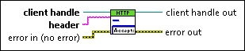

RemoveHeader VI
Owning Palette: Headers VIs
Requires: Base Development System
Removes a header field line from all Web requests associated with the client handle. Headers define attributes of the data exchanged between the client and server. Client handles save header values across multiple Web requests. Use the Open Handle VI to create a client handle. Refer to the World Wide Web Consortium website at www.w3.org for more information about header field definitions including example headers, descriptions, and syntax.

 Add to the block diagram Add to the block diagram |
 Find on the palette Find on the palette |